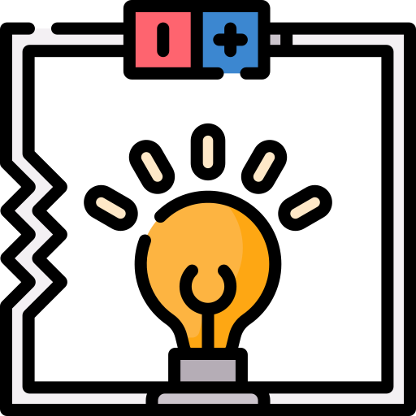
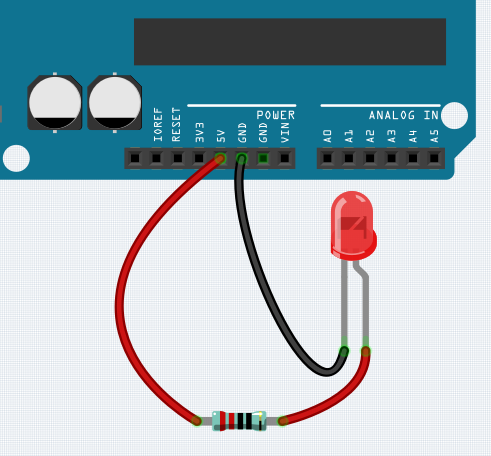
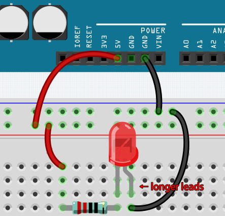
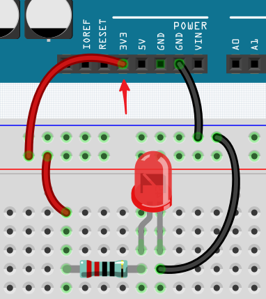
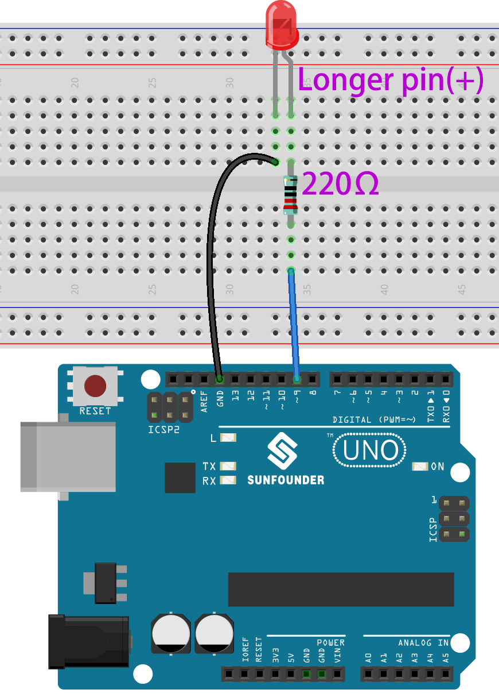

注釈
こんにちは、SunFounderのRaspberry Pi & Arduino & ESP32愛好家コミュニティへようこそ！Facebook上でRaspberry Pi、Arduino、ESP32についてもっと深く掘り下げ、他の愛好家と交流しましょう。
参加する理由は？
エキスパートサポート：コミュニティやチームの助けを借りて、販売後の問題や技術的な課題を解決します。
学び＆共有：ヒントやチュートリアルを交換してスキルを向上させましょう。
独占的なプレビュー：新製品の発表や先行プレビューに早期アクセスしましょう。
特別割引：最新製品の独占割引をお楽しみください。
祭りのプロモーションとギフト：ギフトや祝日のプロモーションに参加しましょう。
👉 私たちと一緒に探索し、創造する準備はできていますか？[ここ]をクリックして今すぐ参加しましょう！
電子回路の構築方法
毎日使用する多くのもの、例えば家の照明やこの文章を読むコンピュータなどは、電気で動いています。
電気を利用するためには、電子回路を構築する必要があります。基本的に、回路とは電流が流れる経路、または電子回路であり、特定の方法で接続された電気デバイスとコンポーネント（器具）で構成されています。これには抵抗器、コンデンサー、電源、スイッチなどが含まれます。


回路とは、電子が動くことで電流を生み出す閉じた経路です。電流を流すためには、電源の正極と負極との間に導通経路が必要で、これを閉回路と呼びます（もし経路が途切れている場合、それは開回路と呼ばれます）。
Arduinoボードにはいくつかの電源出力ピン（正）とグラウンドピン（負）があります。 これらのピンを、ボードに電源を接続することで、電源の正負として使用できます。

電気を用いて、光や音、動きを生み出す作品を作成することができます。 LEDを点灯させるには、長いピンを正極に、短いピンを負極に接続します。 このままではLEDがすぐに壊れてしまうため、回路内に220Ωの抵抗器を追加して保護する必要があります。
その回路の構造は下記の通りです。


この段階で疑問が浮かぶかもしれません：この回路をどう構築すればよいのか？ワイヤーを手で持つのか、ピンとワイヤーにテープを貼るのか？
このような状況では、半田不要のブレッドボードが最も強力な味方となります。
こんにちは、ブレッドボード！
ブレッドボードは、多数の小さな穴がある長方形のプラスチック板です。 この穴は、電子部品を簡単に挿入し、電子回路を構築するために用意されています。 ブレッドボードは電子部品を恒久的に固定しないので、何か問題が起きた場合でも回路を簡単に修理し、やり直すことができます。
注釈
ブレッドボードの使用に特別な工具は必要ありません。ただし、多くの電子部品は非常に小さく、ピンセットが小さなパーツを取り扱いやすくするのに役立ちます。
インターネット上では、ブレッドボードに関する多くの情報を見つけることができます。
ブレッドボードについて知っておくべきいくつかのポイント：
半行ごとのグループ（例：行1の列A-E、行3の列F-Jなど）は内部で接続されています。したがって、A1から電気信号が流れ込むと、B1、C1、D1、E1から流れ出ますが、F1やA2からは流れ出ません。
ほとんどの場合、ブレッドボードの両側は電源バスとして使用され、各列の穴（約50穴）が連結されています。一般的に、赤い線の近くの穴には正の電源が、青い線の近くの穴には負の電源が接続されます。
回路内での電流は、負荷を通過した後、正極から負極に流れます。この場合、ショートが発生する可能性があります。
電流の方向に従って回路を組み立てましょう！


この回路では、ボードの5VピンでLEDを点灯させます。オス-オス（M2M）ジャンパーワイヤーを使用して、赤い電源バスに接続します。
LEDを保護するために、電流は220Ωの抵抗器を通過させます。抵抗器の一方の端（どちらでも可）を赤い電源バスに、他方の端をブレッドボードの空いている行に接続します。
注釈
220Ωの抵抗器のカラーリングは赤、赤、黒、黒、茶です。
LEDを手に取ると、リード線の一方がもう一方より長いことがわかります。長いリード線を抵抗器と同じ行に、短いリード線を別の行に接続します。
注釈
長いリードは陽極で、回路の正の側を示します。短いリードは陰極で、負の側を示します。
陽極は、抵抗器を介してGPIOピンに接続する必要があります。陰極はGNDピンに接続する必要があります。
オス-オス（M2M）ジャンパーワイヤーを使用して、LEDの短いピンをブレッドボードの負電源バスに接続します。
ジャンパーワイヤーを使用して、ボードのGNDピンを負の電源バスに接続します。
ショート回路に注意
ショート回路は、接続すべきでない二つの部品が「偶然」接続されたときに発生します。 このキットには、抵抗器、トランジスタ、コンデンサ、LEDなど、長い金属ピンを持つ部品が含まれており、それらが互いに触れ合ってショートを引き起こすことがあります。ショートが発生すると、一部の回路は単に正常に動作しなくなるだけですが、稀に部品が恒久的に損傷することもあり、特に電源と接地バス間で、回路が非常に高温になり、ブレッドボードのプラスチックが溶けたり、部品が焼けることもあります！
したがって、ブレッドボード上のすべての電子部品のピンが互いに触れていないように、常に注意してください。
回路の方向性
回路には方向性があり、特定の電子部品においてその方向性は重要な役割を果たします。極性を持つデバイスがあり、それらは正極と負極に基づいて正確に接続する必要があります。方向性を間違えて組み立てた回路は正常に動作しません。
先ほど組み立てたこのシンプルな回路でLEDを逆にすると、もはや動作しないことが分かります。
逆に、この回路の抵抗器のように、方向性を持たないデバイスもありますので、それらを逆にしてもLEDの正常な動作に影響を与えません。
ほとんどの部品やモジュールは、"+", "-", "GND", "VCC" といったラベルがあるか、ピンの長さが異なる場合、特定の方法で回路に接続する必要があります。
回路の保護
電流とは、完全な電気回路の一点を流れる電子の速度です。基本的に、電流 = 流れです。アンペア（AM-pir）、またはアンプは、電流を測定するための国際単位です。これは、与えられた時間に回路の一点を流れる電子（「電気量」とも呼ばれる）の量を表現します。
電流の流れの背後にある駆動力（電圧）を電圧と呼び、ボルト（V）で測定されます。
抵抗（R）は、電流の流れを制限する物質の性質であり、オーム（Ω）で測定されます。
オームの法則によれば（温度が一定の場合）、電流、電圧、および抵抗は比例します。 回路の電流は、その電圧に比例し、その抵抗に反比例します。
したがって、電流（I）= 電圧（V）/ 抵抗（R）です。
オームの法則については簡単な実験で確認できます。

5Vから3.3Vに接続するワイヤーを変更すると、LEDが暗くなります。 抵抗器を220オームから1000オーム（カラーリング：茶、黒、黒、茶、茶）に変更すると、LEDが以前よりも暗くなることに気づくでしょう。抵抗器が大きいほど、LEDは暗くなります。
ほとんどのパッケージ化されたモジュールは、適切な電圧（通常は3.3Vまたは5V）に接続するだけで済みます。例えば、超音波モジュールなどがそれに該当します。
しかし、自作の回路では、電気デバイスの供給電圧と抵抗の使用に注意が必要です。
例として、LEDは通常20mAの電流を消費し、その電圧降下は約1.8Vです。オームの法則によれば、5Vの電源を使用する場合、LEDを焼き切らないように、最低でも160オーム（(5-1.8)/20mA）の抵抗器を接続する必要があります。
Arduinoで回路を制御
Arduinoプログラミングと電子回路の基本的な理解ができたところで、最も重要な問題に取り組みます：Arduinoで回路をどのように制御するか？
簡単に言えば、Arduinoが回路を制御する方法は、ボード上のピンのレベルを変更することです。たとえば、オンボードのLEDを制御する場合、ピン13に高レベルまたは低レベルの信号を書き込みます。
では、Arduinoボードでブレッドボード上の点滅するLEDを制御するためのコードを書いてみましょう。LEDがピン9に接続されるように回路を組み立てます。


次に、このスケッチをArduino開発ボードにアップロ
int ledPin = 9;
int delayTime = 500;
void setup() {
pinMode(ledPin,OUTPUT);
}
void loop() {
digitalWrite(ledPin,HIGH);
delay(delayTime);
digitalWrite(ledPin,LOW);
delay(delayTime);
}
このスケッチは、オンボードLEDの点滅を制御するために使用したものと非常に似ていますが、 ledPin の値が9に変更されています。
これは、今回はピン9のレベルを制御しようとしているためです。
これで、ブレッドボード上のLEDが点滅するのが見えるでしょう。